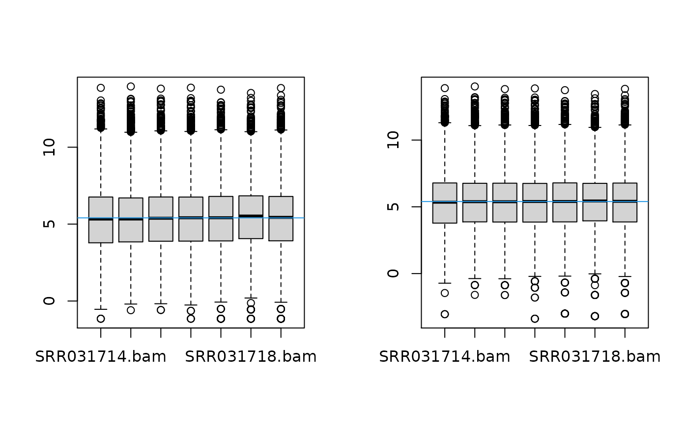

vignettes/09-applying-rnaseq-solutions.Rmd
09-applying-rnaseq-solutions.RmdThe RNA-Seq data we will be analysing today come from this published paper:
Brooks, A.N., Yang, L., Duff, M.O., Hansen, K.D., Park, J.W., Dudoit, S., Brenner, S.E. and Graveley, B.R. (2011) Conservation of an rna regulatory map between drosophila and mammals. Genome Research, 21(2), 193-202.
http://www.ncbi.nlm.nih.gov/pubmed/20921232
This is a publicly available dataset, deposited in the Short Read Archive. The RNA-sequence data are available from GEO under accession nos. GSM461176-GSM461181. The authors combined RNAi and RNASeq to identify exons regulated by Pasilla, the Drosophila melanogaster ortholog of mammalian NOVA1 and NOVA2. They showed that the RNA regulatory map of Pasilla and NOVA1/2 is highly conserved between insects and mammals. NOVA1 and NOVA2 are best known for being involved in alternative splicing. Cells from S2-DRSC, which is an embryonic cell line, were cultured and subjected to a treatment in order to knock-down Pasilla. The four untreated and three treated RNAi samples were used in the analysis. The treated samples had Pasilla knocked down by approximately 60% compared to the untreated samples. Some of the samples had undergone paired end sequencing while other samples were sequenced from one end only.
The reads were aligned to the Drosophila reference genome, downloaded from Ensembl, using the tophat aligner. The reads were summarised at the gene-level using htseq-count, a function from the tool HTSeq (http://wwwhuber.embl.de/users/anders/HTSeq/doc/overview.html).
For the purpose of today’s workshop, we will be analysing the gene level counts.
First, let’s load all the libraries we will need today.
Next, read in the data and sample information file:
counts <- read.delim(file="https://ndownloader.figshare.com/files/5999835?private_link=e08e71c42f118dbe8be6")
sampleinfo <- read.delim(file="https://ndownloader.figshare.com/files/5999838?private_link=e08e71c42f118dbe8be6", stringsAsFactors = TRUE)Check that the data has benn imported correctly.
head(counts)## SRR031714.bam SRR031716.bam SRR031724.bam SRR031726.bam
## FBgn0037213 157 142 213 291
## FBgn0000500 0 3 4 5
## FBgn0053294 14 18 13 19
## FBgn0037215 1666 1948 1662 1833
## FBgn0037217 13 19 18 23
## FBgn0037218 732 755 803 906
## SRR031708.bam SRR031718.bam SRR031728.bam
## FBgn0037213 123 225 164
## FBgn0000500 2 1 1
## FBgn0053294 22 34 22
## FBgn0037215 1625 1701 1870
## FBgn0037217 15 15 17
## FBgn0037218 695 767 793
sampleinfo## SampleName Group Library
## 1 SRR031714 Untreated PE
## 2 SRR031716 Untreated PE
## 3 SRR031724 Treated PE
## 4 SRR031726 Treated PE
## 5 SRR031708 Untreated SE
## 6 SRR031718 Treated SE
## 7 SRR031728 Untreated SEOur main interest is in testing the treated versus untreated groups. To check how many samples we have in each group we can use the table command.
table(sampleinfo$Group)##
## Treated Untreated
## 3 4The minimum sample size is 3. Let’s check the relationship between CPM and counts to see what CPM threshold we should be imposing. Recall we’re looking for a CPM that corresponds to a count of roughly 10-15.
mycpm <- cpm(counts)
plot(counts[,1],mycpm[,1],xlim=c(0,20),ylim=c(0,5))
abline(v=10,col=2)
abline(h=2,col=4)We can filter on a CPM of 2 or 3 in at least 3 samples.
## keep
## FALSE TRUE
## 7345 7524
counts.keep <- counts[keep,]
dim(counts.keep)## [1] 7524 7We are filtering out about half our genes.
y <- DGEList(counts.keep)Let’s do a number of quality control plots.
First, check the library sizes:
barplot(y$samples$lib.size)Next check the distribution of the counts using a boxplot:
par(mfrow=c(1,1))
# Get log2 counts per million
logcpm <- cpm(y$counts,log=TRUE)
# Check distributions of samples using boxplots
boxplot(logcpm, xlab="", ylab="Log2 counts per million",las=2,outline=FALSE)
# Let's add a blue horizontal line that corresponds to the median logCPM
abline(h=median(logcpm),col="blue")
title("Boxplots of logCPMs (unnormalised)")We can colour by our groups, or by the different library prep.
par(mfrow=c(1,2),oma=c(2,0,0,0))
group.col <- c("red","blue")[sampleinfo$Group]
boxplot(logcpm, xlab="", ylab="Log2 counts per million",las=2,col=group.col,
pars=list(cex.lab=0.8,cex.axis=0.8))
abline(h=median(logcpm),col="blue")
title("Boxplots of logCPMs\n(coloured by groups)",cex.main=0.8)
lib.col <- c("light pink","light green")[sampleinfo$Library]
boxplot(logcpm, xlab="", ylab="Log2 counts per million",las=2, col=lib.col,
pars=list(cex.lab=0.8,cex.axis=0.8))
abline(h=median(logcpm),col="blue")
title("Boxplots of logCPMs\n(coloured by library prep)",cex.main=0.8)It doesn’t look like there are any large biases in the data.
Finally, let’s check our MDS plots.
par(mfrow=c(1,2))
plotMDS(y,col=group.col)
legend("topright",legend=levels(sampleinfo$Group),fill=c("red","blue"))
plotMDS(y,col=lib.col)
legend("topleft",legend=levels(sampleinfo$Library),fill=c("light pink","light green"))It looks like there is some variability in the data due to library type e.g. single end or paired end.
First we need a matrix of log counts:
logcounts <- cpm(y,log=TRUE)Get variances for genes:
var_genes <- apply(logcounts, 1, var)Get top 500 most variable
highly_variable_lcpm <- logcounts[select_var,]
dim(highly_variable_lcpm)## [1] 500 7
mypalette <- brewer.pal(11,"RdYlBu")
morecols <- colorRampPalette(mypalette)
# Plot the heatmap
heatmap.2(highly_variable_lcpm,col=rev(morecols(50)),trace="none", main="Top 500 most variable genes across samples",ColSideColors=group.col,scale="row",margins=c(10,5))Let’s do TMM normalisation
y <- calcNormFactors(y)
y$samples## group lib.size norm.factors
## SRR031714.bam 1 4198181 0.9805029
## SRR031716.bam 1 4740969 0.9566649
## SRR031724.bam 1 4601291 0.9936278
## SRR031726.bam 1 5195516 1.0019699
## SRR031708.bam 1 3980986 1.0036556
## SRR031718.bam 1 4320527 1.0556860
## SRR031728.bam 1 4031608 1.0106328We want to test for differences between the treated and untreated samples. However, we know that the library preparation adds variability to the data, so we need to account for it in our model. We do this by modelling both Group and Library as variables in our design matrix. This is known as an additive model.
design <- model.matrix(~sampleinfo$Library + sampleinfo$Group)
design## (Intercept) sampleinfo$LibrarySE sampleinfo$GroupUntreated
## 1 1 0 1
## 2 1 0 1
## 3 1 0 0
## 4 1 0 0
## 5 1 1 1
## 6 1 1 0
## 7 1 1 1
## attr(,"assign")
## [1] 0 1 2
## attr(,"contrasts")
## attr(,"contrasts")$`sampleinfo$Library`
## [1] "contr.treatment"
##
## attr(,"contrasts")$`sampleinfo$Group`
## [1] "contr.treatment"
par(mfrow=c(1,2))
boxplot(logcounts)
abline(h=median(logcounts),col=4)
boxplot(v$E)
abline(h=median(v$E),col=4)
fit <- lmFit(v,design)
fit <- eBayes(fit)
results <- decideTests(fit)
summary(results)## Int SEvsPE UVsT
## Down 4 125 440
## NotSig 66 7142 6641
## Up 7454 257 443
topTable(fit,coef=3,sort.by="p")## logFC AveExpr t P.Value adj.P.Val B
## FBgn0025111 -2.863110 6.253448 -31.24326 9.756044e-13 4.734428e-09 19.04663
## FBgn0003360 3.089242 7.778378 30.57062 1.258487e-12 4.734428e-09 19.04370
## FBgn0026562 2.422219 11.359837 24.25592 1.868075e-11 4.685133e-08 16.57869
## FBgn0029167 2.247086 7.825170 21.77945 6.509505e-11 1.224438e-07 15.57725
## FBgn0035085 2.677008 5.180607 18.97509 3.188148e-10 4.797524e-07 13.66077
## FBgn0039155 4.272254 4.800907 17.42222 8.476440e-10 1.062946e-06 12.15024
## FBgn0040091 1.559497 6.245766 15.43293 3.363833e-09 3.615639e-06 11.72125
## FBgn0023479 1.576335 7.768886 15.06473 4.419245e-09 3.877495e-06 11.43434
## FBgn0029896 2.312097 4.881577 15.00033 4.638152e-09 3.877495e-06 11.25267
## FBgn0027279 1.180272 7.760889 14.37303 7.503535e-09 5.645660e-06 10.89435The rownames of the fit object are http://flybase.org/ ids.
First we need to decide what information we want. In order to see what we can extract we can run the columns function on the annotation database.
columns(org.Dm.eg.db)## [1] "ACCNUM" "ALIAS" "ENSEMBL" "ENSEMBLPROT" "ENSEMBLTRANS"
## [6] "ENTREZID" "ENZYME" "EVIDENCE" "EVIDENCEALL" "FLYBASE"
## [11] "FLYBASECG" "FLYBASEPROT" "GENENAME" "GO" "GOALL"
## [16] "MAP" "ONTOLOGY" "ONTOLOGYALL" "PATH" "PMID"
## [21] "REFSEQ" "SYMBOL" "UNIGENE" "UNIPROT"We definitely want gene symbols and perhaps the full gene name and Entrez id. Let’s build up our annotation information in a separate data frame using the select function. Note, by default, the select function assumes that the keys provided are Entrez ids. However, in this case we are using FlyBase ids as the keys. As such, we need to give the select function this information using the keytype argument which we will set to "FLYBASE".
ann <- select(org.Dm.eg.db,keys=rownames(fit),columns=c("FLYBASE","ENTREZID","SYMBOL","GENENAME"),keytype="FLYBASE")## 'select()' returned 1:1 mapping between keys and columns
# Have a look at the annotation
head(ann)## FLYBASE ENTREZID SYMBOL GENENAME
## 1 FBgn0037213 40522 CG12581 uncharacterized protein
## 2 FBgn0053294 3772637 CR33294 pseudo
## 3 FBgn0037215 40524 beta-Man beta-Mannosidase
## 4 FBgn0037217 40526 CG14636 uncharacterized protein
## 5 FBgn0037218 40527 aux auxilin
## 6 FBgn0261436 40528 DhpD Dihydropterin deaminaseLet’s double check that the FLYBASE column matches exactly to our fit rownames.
##
## TRUE
## 7524We can slot in the annotation information into the genes slot of fit. (Please note that if the select function returns a 1:many mapping then you can’t just append the annotation to the fit object. An alternative way to get annotation is shown below.)
fit$genes <- annNow when we run the topTable command, the annotation information should be included in the output.
topTable(fit,coef=3,sort.by="p")## FLYBASE ENTREZID SYMBOL
## FBgn0025111 FBgn0025111 32008 Ant2
## FBgn0003360 FBgn0003360 32007 sesB
## FBgn0026562 FBgn0026562 43230 SPARC
## FBgn0029167 FBgn0029167 39529 Hml
## FBgn0035085 FBgn0035085 37991 CG3770
## FBgn0039155 FBgn0039155 42865 Kal1
## FBgn0040091 FBgn0040091 37590 Ugt317A1
## FBgn0023479 FBgn0023479 39048 teq
## FBgn0029896 FBgn0029896 31612 CG3168
## FBgn0027279 FBgn0027279 33137 l(1)G0196
## GENENAME logFC AveExpr
## FBgn0025111 Adenine nucleotide translocase 2 -2.863110 6.253448
## FBgn0003360 stress-sensitive B 3.089242 7.778378
## FBgn0026562 Secreted protein, acidic, cysteine-rich 2.422219 11.359837
## FBgn0029167 Hemolectin 2.247086 7.825170
## FBgn0035085 uncharacterized protein 2.677008 5.180607
## FBgn0039155 Kallmann syndrome 1 4.272254 4.800907
## FBgn0040091 UDP-glycosyltransferase family 317 member A1 1.559497 6.245766
## FBgn0023479 Tequila 1.576335 7.768886
## FBgn0029896 uncharacterized protein 2.312097 4.881577
## FBgn0027279 lethal (1) G0196 1.180272 7.760889
## t P.Value adj.P.Val B
## FBgn0025111 -31.24326 9.756044e-13 4.734428e-09 19.04663
## FBgn0003360 30.57062 1.258487e-12 4.734428e-09 19.04370
## FBgn0026562 24.25592 1.868075e-11 4.685133e-08 16.57869
## FBgn0029167 21.77945 6.509505e-11 1.224438e-07 15.57725
## FBgn0035085 18.97509 3.188148e-10 4.797524e-07 13.66077
## FBgn0039155 17.42222 8.476440e-10 1.062946e-06 12.15024
## FBgn0040091 15.43293 3.363833e-09 3.615639e-06 11.72125
## FBgn0023479 15.06473 4.419245e-09 3.877495e-06 11.43434
## FBgn0029896 15.00033 4.638152e-09 3.877495e-06 11.25267
## FBgn0027279 14.37303 7.503535e-09 5.645660e-06 10.89435If for some reason the select function doesn’t work, or the result is a 1:many mapping, there is a less elegant way to get the annotations using the toTable command.
# Let's see what we can get in table format from org.Dm.eg.db
ls("package:org.Dm.eg.db")## [1] "org.Dm.eg" "org.Dm.eg_dbconn"
## [3] "org.Dm.eg_dbfile" "org.Dm.eg_dbInfo"
## [5] "org.Dm.eg_dbschema" "org.Dm.eg.db"
## [7] "org.Dm.egACCNUM" "org.Dm.egACCNUM2EG"
## [9] "org.Dm.egALIAS2EG" "org.Dm.egCHR"
## [11] "org.Dm.egCHRLENGTHS" "org.Dm.egCHRLOC"
## [13] "org.Dm.egCHRLOCEND" "org.Dm.egENSEMBL"
## [15] "org.Dm.egENSEMBL2EG" "org.Dm.egENSEMBLPROT"
## [17] "org.Dm.egENSEMBLPROT2EG" "org.Dm.egENSEMBLTRANS"
## [19] "org.Dm.egENSEMBLTRANS2EG" "org.Dm.egENZYME"
## [21] "org.Dm.egENZYME2EG" "org.Dm.egFLYBASE"
## [23] "org.Dm.egFLYBASE2EG" "org.Dm.egFLYBASECG"
## [25] "org.Dm.egFLYBASECG2EG" "org.Dm.egFLYBASEPROT"
## [27] "org.Dm.egFLYBASEPROT2EG" "org.Dm.egGENENAME"
## [29] "org.Dm.egGO" "org.Dm.egGO2ALLEGS"
## [31] "org.Dm.egGO2EG" "org.Dm.egMAP"
## [33] "org.Dm.egMAP2EG" "org.Dm.egMAPCOUNTS"
## [35] "org.Dm.egORGANISM" "org.Dm.egPATH"
## [37] "org.Dm.egPATH2EG" "org.Dm.egPMID"
## [39] "org.Dm.egPMID2EG" "org.Dm.egREFSEQ"
## [41] "org.Dm.egREFSEQ2EG" "org.Dm.egSYMBOL"
## [43] "org.Dm.egSYMBOL2EG" "org.Dm.egUNIGENE"
## [45] "org.Dm.egUNIGENE2EG" "org.Dm.egUNIPROT"
# Get annotation
fly <- toTable(org.Dm.egFLYBASE)
head(fly)## gene_id flybase_id
## 1 30970 FBgn0040373
## 2 30971 FBgn0040372
## 3 30972 FBgn0261446
## 4 30973 FBgn0000316
## 5 30975 FBgn0005427
## 6 30976 FBgn0040370
symbol <- toTable(org.Dm.egSYMBOL)
genename <- toTable(org.Dm.egGENENAME)
# We can use the merge command to merge two dataframes
ann1 <- merge(fly,symbol,by="gene_id")
head(ann1)## gene_id flybase_id symbol
## 1 10178776 FBgn0261702 asRNA:CR42738
## 2 10178777 FBgn0262024 CG42835
## 3 10178779 FBgn0058354 CR40354
## 4 10178780 FBgn0053929 CR33929
## 5 10178781 FBgn0262141 CG42867
## 6 10178782 FBgn0062978 CG31808## gene_id flybase_id symbol gene_name
## 1 10178776 FBgn0261702 asRNA:CR42738 antisense RNA:CR42738
## 2 10178777 FBgn0262024 CG42835 uncharacterized protein
## 3 10178779 FBgn0058354 CR40354 pseudo
## 4 10178780 FBgn0053929 CR33929 pseudo
## 5 10178781 FBgn0262141 CG42867 uncharacterized protein
## 6 10178782 FBgn0062978 CG31808 uncharacterized proteinNow we need to match up between rownames(fit) and the ensemble gene id in ann2.
##
## FALSE TRUE
## 6911 613
ann3 <- ann2[m[!is.na(m)],] # exclude unmatched rows
# compare the results in ann3 to what is in the fit object
head(ann3)## gene_id flybase_id symbol gene_name
## 16229 40522 FBgn0037213 CG12581 uncharacterized protein
## 13723 3772637 FBgn0053294 CR33294 pseudo
## 16230 40524 FBgn0037215 beta-Man beta-Mannosidase
## 16231 40526 FBgn0037217 CG14636 uncharacterized protein
## 16232 40527 FBgn0037218 aux auxilin
## 16233 40528 FBgn0261436 DhpD Dihydropterin deaminase
head(fit$genes)## FLYBASE ENTREZID SYMBOL GENENAME
## 1 FBgn0037213 40522 CG12581 uncharacterized protein
## 2 FBgn0053294 3772637 CR33294 pseudo
## 3 FBgn0037215 40524 beta-Man beta-Mannosidase
## 4 FBgn0037217 40526 CG14636 uncharacterized protein
## 5 FBgn0037218 40527 aux auxilin
## 6 FBgn0261436 40528 DhpD Dihydropterin deaminase
topTable(fit,coef=3,sort.by="p")## FLYBASE ENTREZID SYMBOL
## FBgn0025111 FBgn0025111 32008 Ant2
## FBgn0003360 FBgn0003360 32007 sesB
## FBgn0026562 FBgn0026562 43230 SPARC
## FBgn0029167 FBgn0029167 39529 Hml
## FBgn0035085 FBgn0035085 37991 CG3770
## FBgn0039155 FBgn0039155 42865 Kal1
## FBgn0040091 FBgn0040091 37590 Ugt317A1
## FBgn0023479 FBgn0023479 39048 teq
## FBgn0029896 FBgn0029896 31612 CG3168
## FBgn0027279 FBgn0027279 33137 l(1)G0196
## GENENAME logFC AveExpr
## FBgn0025111 Adenine nucleotide translocase 2 -2.863110 6.253448
## FBgn0003360 stress-sensitive B 3.089242 7.778378
## FBgn0026562 Secreted protein, acidic, cysteine-rich 2.422219 11.359837
## FBgn0029167 Hemolectin 2.247086 7.825170
## FBgn0035085 uncharacterized protein 2.677008 5.180607
## FBgn0039155 Kallmann syndrome 1 4.272254 4.800907
## FBgn0040091 UDP-glycosyltransferase family 317 member A1 1.559497 6.245766
## FBgn0023479 Tequila 1.576335 7.768886
## FBgn0029896 uncharacterized protein 2.312097 4.881577
## FBgn0027279 lethal (1) G0196 1.180272 7.760889
## t P.Value adj.P.Val B
## FBgn0025111 -31.24326 9.756044e-13 4.734428e-09 19.04663
## FBgn0003360 30.57062 1.258487e-12 4.734428e-09 19.04370
## FBgn0026562 24.25592 1.868075e-11 4.685133e-08 16.57869
## FBgn0029167 21.77945 6.509505e-11 1.224438e-07 15.57725
## FBgn0035085 18.97509 3.188148e-10 4.797524e-07 13.66077
## FBgn0039155 17.42222 8.476440e-10 1.062946e-06 12.15024
## FBgn0040091 15.43293 3.363833e-09 3.615639e-06 11.72125
## FBgn0023479 15.06473 4.419245e-09 3.877495e-06 11.43434
## FBgn0029896 15.00033 4.638152e-09 3.877495e-06 11.25267
## FBgn0027279 14.37303 7.503535e-09 5.645660e-06 10.89435Let’s check the expression of pasilla.
## FLYBASE ENTREZID SYMBOL GENENAME logFC AveExpr t
## FBgn0261552 FBgn0261552 44258 ps pasilla 1.845368 8.344996 11.5651
## P.Value adj.P.Val B
## FBgn0261552 8.37355e-08 8.37355e-08 8.425095
par(mfrow=c(1,2))
plotMD(fit,coef=3,status=results[,"UVsT"])
volcanoplot(fit,coef=3,highlight=100,names=fit$genes$SYMBOL)
stripchart(v$E["FBgn0025111",]~sampleinfo$Group)
# Check expression of Pasilla
stripchart(v$E["FBgn0261552",]~sampleinfo$Group)
fit.treat <- treat(fit,lfc=1)
res.treat <- decideTests(fit.treat)
summary(res.treat)## Int SEvsPE UVsT
## Down 2 13 10
## NotSig 350 7510 7496
## Up 7172 1 18
topTreat(fit.treat,coef=3)## FLYBASE ENTREZID SYMBOL GENENAME
## FBgn0003360 FBgn0003360 32007 sesB stress-sensitive B
## FBgn0025111 FBgn0025111 32008 Ant2 Adenine nucleotide translocase 2
## FBgn0026562 FBgn0026562 43230 SPARC Secreted protein, acidic, cysteine-rich
## FBgn0039155 FBgn0039155 42865 Kal1 Kallmann syndrome 1
## FBgn0029167 FBgn0029167 39529 Hml Hemolectin
## FBgn0035085 FBgn0035085 37991 CG3770 uncharacterized protein
## FBgn0034736 FBgn0034736 37572 gas gasoline
## FBgn0000071 FBgn0000071 40831 Ama Amalgam
## FBgn0029896 FBgn0029896 31612 CG3168 uncharacterized protein
## FBgn0039827 FBgn0039827 43689 CG1544 uncharacterized protein
## logFC AveExpr t P.Value adj.P.Val
## FBgn0003360 3.089242 7.778378 20.674784 5.940461e-11 2.711163e-07
## FBgn0025111 -2.863110 6.253448 -20.330911 7.206708e-11 2.711163e-07
## FBgn0026562 2.422219 11.359837 14.241997 4.158446e-09 1.042938e-05
## FBgn0039155 4.272254 4.800907 13.344224 8.653631e-09 1.627748e-05
## FBgn0029167 2.247086 7.825170 12.087142 2.578989e-08 3.880863e-05
## FBgn0035085 2.677008 5.180607 11.886920 3.099362e-08 3.886600e-05
## FBgn0034736 3.407306 3.372966 8.780952 7.931358e-07 8.094637e-04
## FBgn0000071 -2.572434 4.209333 -8.710932 8.606738e-07 8.094637e-04
## FBgn0029896 2.312097 4.881577 8.512571 1.091548e-06 8.898178e-04
## FBgn0039827 3.925533 3.204658 8.449359 1.182639e-06 8.898178e-04## Term Ont N Up Down
## GO:0019991 septate junction assembly BP 29 0 12
## GO:0120192 tight junction assembly BP 31 0 12
## GO:0120193 tight junction organization BP 31 0 12
## GO:0005576 extracellular region CC 318 43 43
## GO:0043297 apical junction assembly BP 36 0 12
## GO:0005615 extracellular space CC 181 29 29
## GO:0045216 cell-cell junction organization BP 59 0 15
## GO:0006006 glucose metabolic process BP 22 2 9
## GO:0060856 establishment of blood-brain barrier BP 17 2 8
## GO:0060857 establishment of glial blood-brain barrier BP 13 0 7
## P.Up P.Down
## GO:0019991 1.000000e+00 2.835702e-08
## GO:0120192 1.000000e+00 6.926354e-08
## GO:0120193 1.000000e+00 6.926354e-08
## GO:0005576 1.260580e-07 1.453207e-07
## GO:0043297 1.000000e+00 4.698711e-07
## GO:0005615 4.764942e-07 5.288276e-07
## GO:0045216 1.000000e+00 9.120552e-07
## GO:0006006 3.690371e-01 1.835789e-06
## GO:0060856 2.598739e-01 1.940334e-06
## GO:0060857 1.000000e+00 2.797378e-06